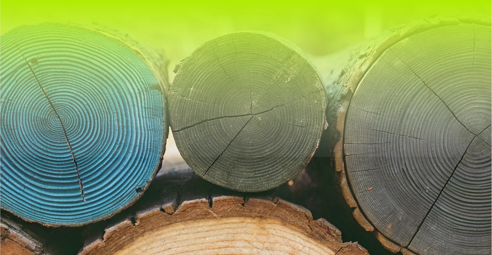

Годичные кольца деревьев: Хранители прошлого
Годичные кольца деревьев — это не просто визуальный признак возраста дерева, но и ценный источник информации о прошлых климатических условиях и экстремальных событиях. Дендрохронология, наука о датировке и интерпретации годичных колец, позволяет ученым реконструировать климатические условия, существовавшие во время роста дерева.
Структура колец и климат
Каждое кольцо представляет собой год жизни дерева, состоящий из светлого и темного слоев. Светлые слои образуются весной и ранним летом, когда дерево растет быстро, а темные слои — в конце лета и осенью, когда рост замедляется. Ширина колец зависит от условий окружающей среды: в теплые и влажные годы кольца шире, а в холодные и сухие — уже[1][3].
Засухи и пожары
Узкие кольца часто указывают на засуху или другие стрессовые условия, которые влияли на рост дерева. Кроме того, присутствие рубцов от пожаров может свидетельствовать о прошлых лесных пожарах[6]. Анализ годичных колец позволяет ученым реконструировать историю засух и других экстремальных событий, что важно для понимания природной изменчивости климата и влияния человека на окружающую среду[4][8].
Изотопный анализ
Изучение изотопного состава колец дает дополнительную информацию о температуре и влажности в прошлом. Этот метод позволяет более точно реконструировать климатические условия и понять, как деревья адаптировались к меняющимся условиям[5].
Что в итоге?
Годичные кольца деревьев — это уникальный инструмент для изучения прошлого и понимания того, как деревья реагировали на экстремальные события. Анализ этих колец помогает ученым лучше понять природную изменчивость климата и оценить влияние человеческой деятельности на окружающую среду.